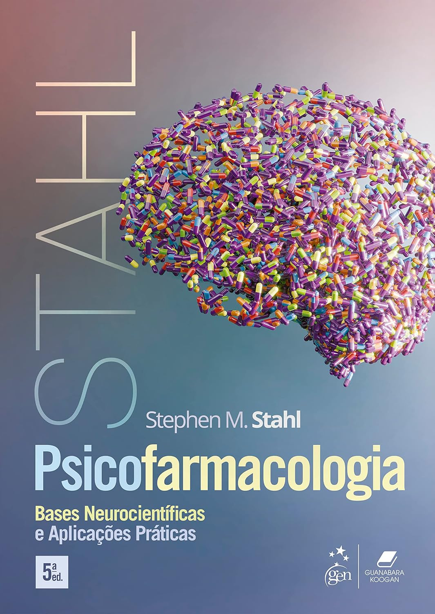
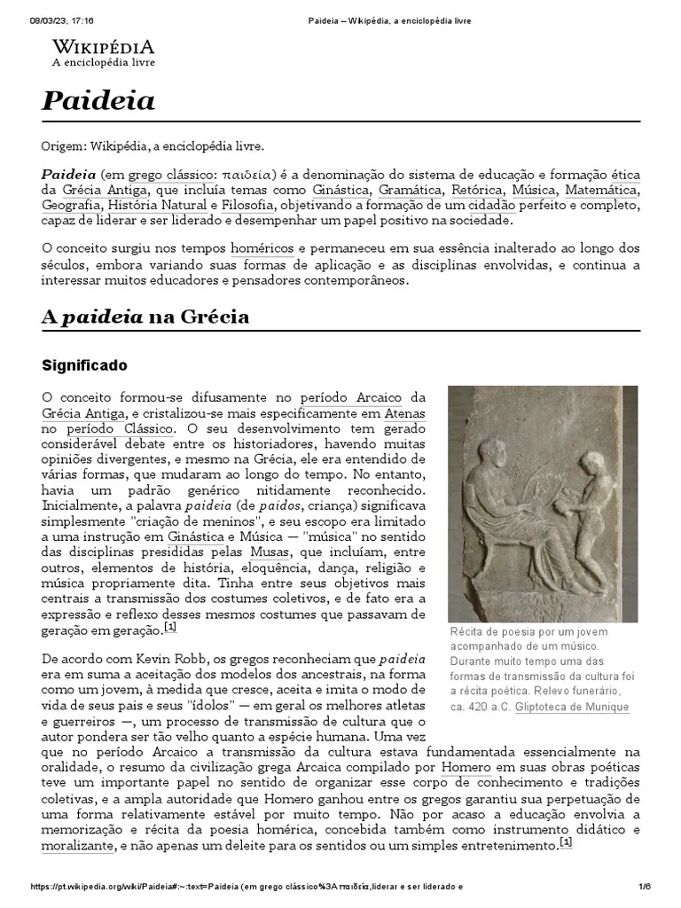

Biblioteca de Psicologia
Livros, periódicos e diretrizes para estudar e se atualizar.
Livros-texto essenciais
Manual para Residência em Psicologia – Sanar
Melhor para começarÉ praticamente um guia completo para residência. Ideal para quem está iniciando os estudos.
ABORDA
- SUS
- Saúde Mental
- Psicopatologia
- Psicologia Hospitalar
- Ética
- Avaliação Psicológica
- Casos clínicos
Psicopatologia e Semiologia dos Transtornos Mentais – Paulo Dalgalarrondo
A principal referência em psicopatologiaCai praticamente em toda prova. É considerado leitura obrigatória.
ABORDA
- Sintomas psíquicos
- Transtornos mentais
- Semiologia
- Diagnóstico
.jpg)
DSM-5-TR
FundamentalQuase todas as bancas utilizam o DSM como referência.
VOCÊ PRECISA CONHECER
- Critérios diagnósticos
- Transtornos
- Especificadores
- Diagnósticos diferenciais
Legislação, ética e saúde pública
.webp)
Código de Ética Profissional do Psicólogo
Decide muitas aprovaçõesPoucas pessoas estudam a fundo, e justamente por isso ele costuma decidir muitas aprovações.
ESTUDE
- Sigilo
- Documentos psicológicos
- Direitos do paciente
- Responsabilidade profissional
- Atuação multiprofissional
.webp)
Lei 8.080 e Lei 8.142
ObrigatóriasToda residência cobra SUS.
ESTUDE
- Princípios
- Diretrizes
- Gestão
- Financiamento
- Participação popular
.webp)
Reforma Psiquiátrica Brasileira
ObrigatóriaTema obrigatório nas provas de residência.
APRENDA
- CAPS
- RAPS
- Lei 10.216
- Desinstitucionalização
- Reabilitação psicossocial
Áreas aplicadas
Avaliação Psicológica – Claudio Simon Hutz
Livro mais utilizadoÉ o livro mais utilizado sobre avaliação psicológica.
APRENDA
- Entrevistas
- Testes
- Parecer
- Laudos
- Validade
- Precisão
.webp)
Psicologia Hospitalar
Muito importantePrincipais autores: Angerami-Camon e Simonetti.
ASSUNTOS
- UTI
- Oncologia
- Cuidados paliativos
- Humanização
- Família
- Luto
.webp)
Psicologia da Saúde
Muito cobrada no ENARETema frequente na prova do ENARE.
ESTUDE
- Adesão ao tratamento
- Promoção da saúde
- Prevenção
- Doenças crônicas
Abordagens teóricas
TCC – Judith Beck
ImportanteTerapia Cognitivo-Comportamental, com referência em Judith Beck.
APRENDA
- Pensamentos automáticos
- Crenças
- Reestruturação cognitiva
- Formulação de caso
.webp)
Psicanálise
ImportanteLacan aparece com menos frequência nas provas.
AUTORES
- Freud
- Melanie Klein
- Winnicott
- Lacan
.webp)
Psicologia Humanista
ImportanteAbordagem centrada na pessoa.
AUTORES E TEMAS
- Carl Rogers
- Maslow
- Abordagem Centrada na Pessoa
.webp)
Psicologia Sistêmica
ImportanteOlhar para a família e para as relações.
ASSUNTOS
- Família
- Comunicação
- Genograma
- Ciclo Vital
Leituras complementares
.webp)
Desenvolvimento Humano
ComplementarAUTORES
- Papalia
- Bee
- Piaget
- Vygotsky
- Erikson
- Wallon
.webp)
Neuropsicologia
ComplementarAUTORES
- Lezak
- Fuentes

Psicofarmacologia
ComplementarAUTORES
- Kaplan
- Stahl
Artigos científicos e bases de dados
Para acompanhar as evidências mais recentes, estas são as bases mais importantes para buscar artigos de Psicologia.
.webp)
Scielo
Base de dadosÉ onde praticamente todas as universidades brasileiras buscam referências.
LEIA ARTIGOS SOBRE
- Psicologia Hospitalar
- Psicologia Clínica
- Saúde Mental
- Atenção Primária
- CAPS
PePSIC
Base de dadosPrincipal base brasileira de Psicologia.
EXCELENTE PARA
- Revisão sistemática
- Artigos nacionais
- Casos clínicos
PubMed
Base de dadosPrincipal base internacional.
IDEAL PARA
- TCC
- Terapias
- Psicologia da Saúde
- Evidências científicas
.webp)
PsycINFO
Base de dadosMaior banco de Psicologia do mundo. Muito usado em mestrado e doutorado.
Revistas que mais publicam Psicologia
.webp)
Psicologia: Ciência e Profissão
Periódico científico.webp)
Estudos de Psicologia
Periódico científico.webp)
Psicologia USP
Periódico científico
Paidéia
Periódico científico.webp)
Psicologia em Estudo
Periódico científico.webp)
Revista Latino-Americana de Psicopatologia Fundamental
Periódico científico.webp)
Trends in Psychiatry and Psychotherapy
Periódico científicoOrdem de estudo recomendada
Se você está começando agora, uma sequência bastante eficiente é:
| ORDEM | PERÍODO | ASSUNTOS |
|---|---|---|
| 1 | 1º mês | SUS, Ética, Leis, Reforma Psiquiátrica |
| 2 | 2º mês | Psicopatologia, DSM-5, CID-11 |
| 3 | 3º mês | Avaliação Psicológica, Psicologia Hospitalar, Psicologia da Saúde |
| 4 | 4º mês | TCC, Psicanálise, Humanismo, Sistêmica |
| 5 | 5º mês | Desenvolvimento Humano, Neuropsicologia, Questões de provas anteriores |